Représentations visuelles
Une des qualités principales de Matlab est sa capacité à visualiser les résultats mathématiques. Il peut tracer des graphes de fonctions, représenter des ensembles de données à l'aide de graphiques, etc. L'accent de ce document est sur la représentation des fonctions. Ce choix est motivé par nos besoins personnels.
Il existe des versions des fonctions plot, surf, plot3, contour, ... présentées ci-dessous qui acceptent pour arguments les fonctions mathématiques que nous définissons dans le document . Ce document inclus des exemples qui illustrent comment utiliser ces nouvelles fonctions graphiques.
Dessins dans ℝ2
Graphe d'une fonction
Supposons que nous voulons tracer le graphe d'une fonction \(f\) définie sur un intervalle \([a,b]\).
- La première étape est de créer une liste x de points qui forment un maillage de l'intervalle \([a,b]\). Nous utilisons bien souvent \(N + 1\) points également distancés de l'intervalle \([a,b]\). Une façon de créer une telle liste est avec la commande x = a : h : b où h = (b-a)/N. Une autre façon de créer la même liste est avec la commande x = linspace(a,b,N+1).
- La deuxième étape est d'évaluer la fonction à chacun des points du maillage. Pour bénéficier de l'optimisation de Matlab, la fonction f doit être une fonction qui est array smart. Cette étape peut alors être complétée avec la simple commande y = f(x).
- Finalement, nous utilisons la commande plot(x,y, options) pour dessiner le graphe. Il y a plusieurs options disponibles. Nous utilisons certaines de ces options dans les exemples ci-dessous. Le lecteur peut utiliser l'aide pour la fonction plot pour obtenir une liste complète de ces options.
Exemple: On considère la fonction \(f\) définie par \(\displaystyle y = f(x) = x^3\) sur l'intervalle \([0,1]\). Les deux commandes suivantes illustrent comment générer \(11\) points également distancés (\(10\) sous-intervalles) incluant les deux points limites de l'intervalle.
>> x = 0:0.1:1
x = 0 0.1000 0.2000 0.3000 0.4000 0.5000 0.6000 0.7000 0.8000 0.9000 1.0000
ou
>> x = linspace(0,1,11)
x = 0 0.1000 0.2000 0.3000 0.4000 0.5000 0.6000 0.7000 0.8000 0.9000 1.0000
Pour évaluer la fonction \(f\) définie par \(\displaystyle f(x) = x^3\) aux \(11\) points que l'on vient de générer, une simple opération sur les tableaux suffit.
>> y = x.^3
y = 0 0.0010 0.0080 0.0270 0.0640 0.1250 0.2160 0.3430 0.5120 0.7290 1.0000
Chacune des composantes de y est le cube de la composante corresponde de x. Finalement, nous fessons appel à la fonction plot de Matlab pour tracer le graphe de \(f\) sur l'intervalle \([0,1]\). La fonction plot utilise une interpolation linéaire entre les \(11\) points également distancés pour approcher le graphe de la fonction \(f\).
>> plot(x,y), grid on
Après avoir pressé la touche Enter, une nouvelle fenêtre s'ouvre avec une figure contenant le graphe de la fonction.
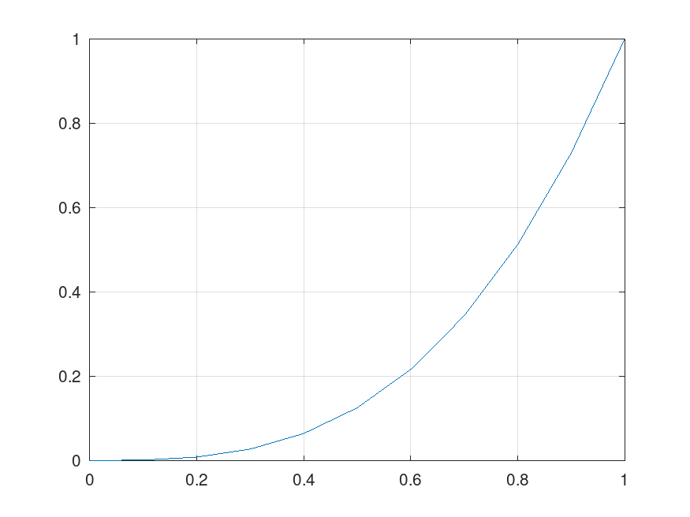
Nous obtenons un graphe plus précis de la fonction en utilisant plus de points également distancés.
Il est possible d'inclure les graphes de plusieurs fonctions dans la même figure. La commande hold on après avoir produit la première figure force Matlab à tracer les graphes suivants dans la figure existante. La commande hold off retourne Matlab à son mode par défaut qui est de remplacer la présente figure par une nouvelle figure.
Exemple: À l'aide de la variable x définie ci-dessus et en assumant que la figure précédente existe toujours (i.e. elle n'a pas été fermée), Les commandes suivantes ajoutent la droite \(y = x + 1\) à la figure contenant le graphe de \(f\).
>> hold on >> z = x + 1; >> plot(x,z,'r') >> text(0.5,1.4,'y = x + 1','Color','red','FontSize',16)
La figure est maintenant
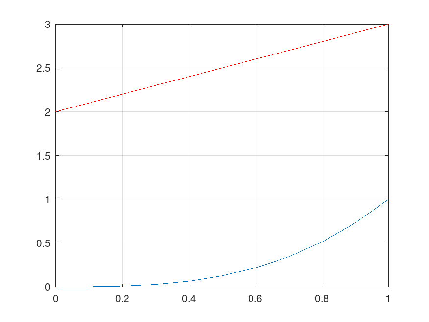
L'option 'r' de la commande plot précédente force Matlab à tracer la droite \(y = x + 1\) en rouge.
Un titre et des étiquettes pour les axes peuvent être ajoutés à la figure à l'aide des fonctions title pour produire le titre, xlabel pour ajouter une étiquette à l'axe des \(x\) et ylabel pour ajouter une étiquette à l'axe des \(y\). L'exemple suivant montre comment utiliser ces fonctions.
Exemple: Supposons que les commandes suivantes font parties de la session qui a produit la figure précédente et que cette figure existe toujours (i.e. elle n'a pas été fermée).
>> title('Exemple de dessin avec MATLAB')
>> xlabel('axe des x')
>> ylabel('axe des y')
Ces commandes ont pour effet d'ajouter à la figure précédente le
titre Exemple de dessin avec MATLAB
et des étiquettes
axe des x
et axe des y
pour obtenir la figure suivante.
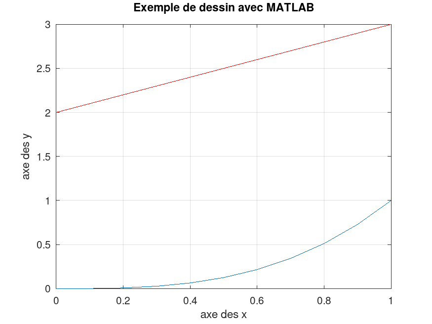
Dessin d'une courbe
Supposons que nous voulons dessiner une courbe donnée par la représentation paramétrique \( (x,y) = (f(t),g(t)) \) pour \( a \leq t \leq b \).
- La première étape est de créer une liste t de points qui forment un maillage de l'intervalle \([a,b]\). Comme nous avons fait pour tracer le graphe d'une fonction, nous utilisons bien souvent \(N + 1\) points également distancés de l'intervalle \([a,b]\).
- La deuxième étape est d'évaluer la représentation paramétrique à chacun des points du maillage. Comme d'habitude, nous assumons que les fonctions f et g qui forment les composantes de la représentation paramétrique sont array smart. Cette étape peut alors être complétée avec les commandes x = f(t) et y = g(t).
- Finalement, nous utilisons la commande plot(x,y, options) pour dessiner la courbe.
Exemple: Supposons que nous voulons tracer la courbe donnée par la représentation paramétrique \( (x,y) = (\sin(t), t\cos(t)) \) pour \(0 \leq t \leq 20 \).
Les commandes suivantes de Matlab tracent cette courbe.
>> t = 0:0.05:20; ...
x = sin(t); ...
y = t.*cos(t); ...
plot(x,y,'b'); ...
xlabel('x') , ylabel('y');
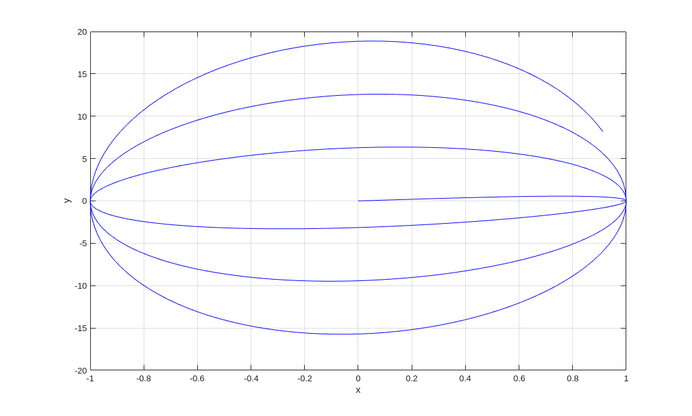
Pour identifier les points sur la courbe qui sont associés aux valeurs entières de \(t\), nous utilisons les commandes suivantes.
>> hold on, ... t = 0:1:20; ... x = sin(t); ... y = t.*cos(t); ... plot(x,y,'*b');
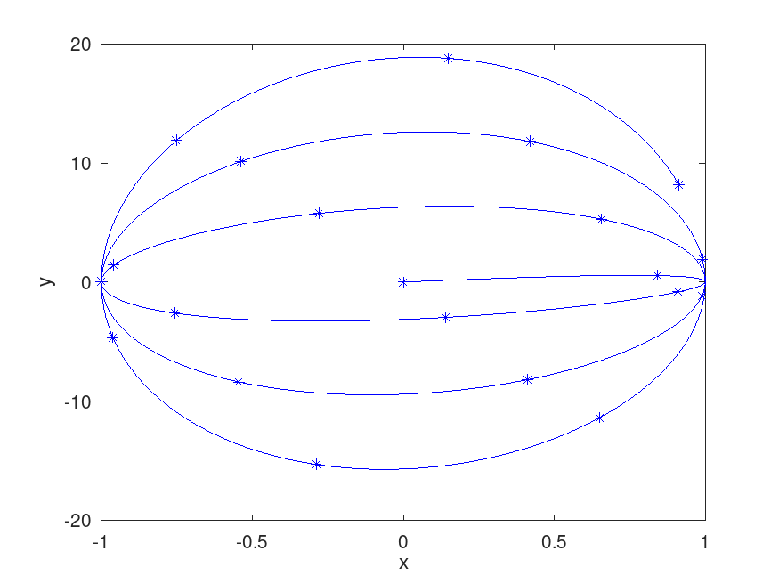
Le troisième argument de plot ci-dessus force Matlab à tracer seulement un astérisque bleu à chacun des points.
Note: Les points de suspension (...) à la fin d'une ligne force Matlab à lire la ligne suivante avant d'exécuter les commandes.
Interpolation
L'interpolation polynomiale peut être utilisée avec Matlab.
Exemple: Nous traçons l'interpolation linéaire de la fonction \(f\) associée aux données dans le tableau ci-dessous.
| x | 0 | 0.7854 | 1.5708 | 2.3562 | 3.1416 |
|---|---|---|---|---|---|
| y | 0 | 0.5554 | 1.5708 | 1.6661 | 0.0000 |
Les données pour \(x\) et \(y\) sont représentées par deux vecteurs dans Matlab.
>> x = [ 0 0.7854 1.5708 2.3562 3.1416 ]
x = 0 0.7854 1.5708 2.3562 3.1416 >> y = [ 0 0.5554 1.5708 1.6661 0.0000 ]
y = 0 0.5554 1.5708 1.6661 0
Si nous assumons que la figure précédente n'est plus présente (ou que la commande hold off a été utilisée), alors la commande suivante trace l'interpolation linéaire de \(f\).
>> plot(x,y);
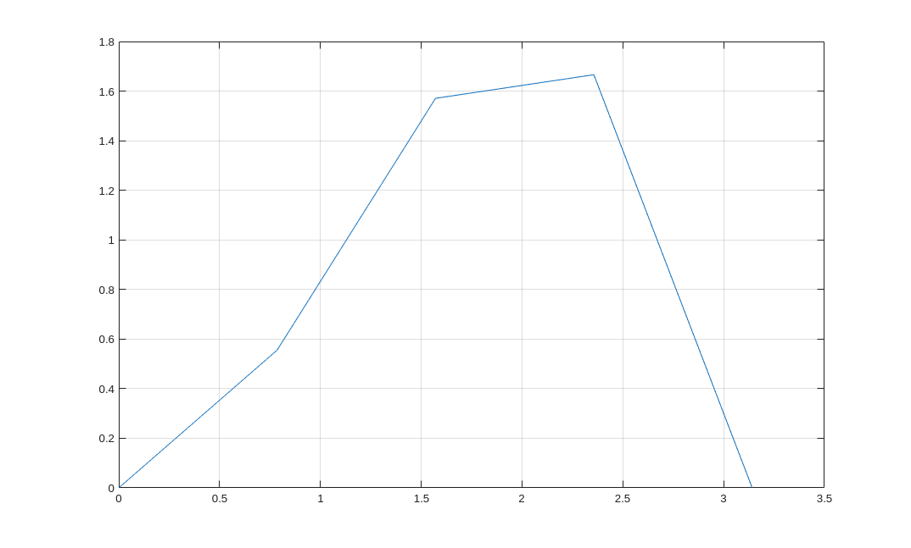
L'interpolation linéaire de \(f\) peut être évaluée à plusieurs points à l'aide de la fonction interp1 de Matlab.
Exemple: Supposons que nous voulions évaluer l'interpolation linéaire de la fonction \(f\) aux points \(0, \pi/10 , \pi/5 , 3\pi/10, \ldots, \pi\). Nous pouvons représenter ces points dans Matlab à l'aide de la liste suivante.
>> z = linspace(0,pi,11)
z = 0 0.3142 0.6283 0.9425 1.2566 1.5708 1.8850 2.1991 2.5133 2.8274 3.1416
La commande suivante dans Matlab calcule la valeur de l'interpolation linéaire de \(f\) aux \(11\) points également distancés donnés par z.
>> w = interp1(x,y,z,'linear')
w =
0 0.2222 0.4443 0.7585 1.1646 1.5708 1.6089 1.6470 1.3329 0.6665 0.0000
Nous avons que w(k) est la valeur de l'interpolation linéaire de la fonction \(f\) évaluée au point z(k). Les commandes suivantes tracent les points de coordonnées \((x,y)\) où \(x\) et \(y\) sont z(k) et w(k) respectivement pour \(k = 1, 2, \ldots, 11\).
>> hold on; ... plot(z,w,'or');
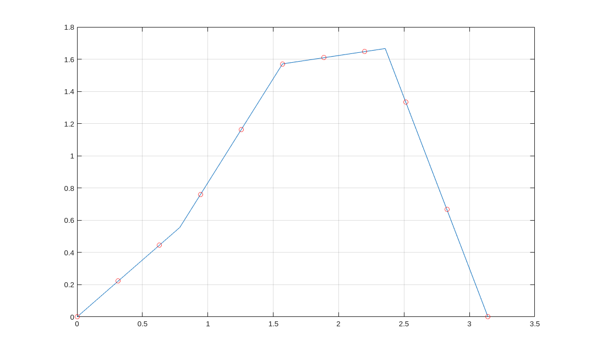
Le troisième argument de plot ci-dessus force Matlab à tracer seulement un cercle rouge pour chacun des points.
Il y a d'autres méthodes d'interpolation que linéaire (le défaut),
comme par exemple cubique et spline
. Pour utiliser
ces méthodes, il suffit de suivre les même étapes que nous avons
présentées dans l'exemple précédant mais en
remplaçant linear par
cubic ou spline.
Le lecteur devrait essayé ces méthodes avec les deux exemples
précédents afin de comparer ces méthodes.
Dessins dans ℝ3
Graphe d'une fonction
La procédure pour tracer le graphe d'une fonction de deux variables à valeurs réelles est très semblable à la procédure pour tracer le graphe d'une fonction d'une variable à valeurs réelles. Supposons que nous voulons tracer le graphe d'un fonction \(f\) définie sur le rectangle \([a,b]\times [c,d]\).
- La première étape est de créer le maillage pour \([a,b]\times [c,d]\). Pour une fonction de deux variables, nous utilisons la fonction meshgrid. Cette fonctions exige deux maillages comme arguments, un maillage x pour l'intervalle \([a,b]\) et un maillage y pour l'intervalle \([c,d]\), et produit deux matrices. Supposons que x est un maillage avec Nx points et y est un maillage avec Ny points. Alors [X,Y] = meshgrid(x,y) produit deux matrices, X et Y, de dimensions Ny × Nx où les points du maillage x sont répétés sur chacune des rangés de X et les points du maillage y sont répétés sur chacune des colonnes de Y. Ainsi, (x(j),y(i)) = (X(i,j), Y(i,j)).
- La deuxième étape est d'évaluer la fonction à chacun des points (x(j),y(i)) du maillage. Comme toujours, nous assumons que la fonction f est array smart. Cette étape peut alors être complétée avec la commande Z = f(X,Y). La matrice Z produite par la fonction f est de dimensions Ny × Nx où Z(i,j) est la valeur de f au point (x(j),y(i)).
- Finalement, nous utilisons la commande surf(X,Y,Z,options) pour dessiner le graphe.
Exemple: Pour dessiner le graphe de la fonction \(f\) définie par \(f(x,y) = \sin(x+y) x^2 y \) pour \(-5 \leq x \leq 5\) et \(-3 \leq y \leq 3\), nous utilisons les commandes suivantes.
>> [X,Y] = meshgrid(-5:0.1:5,-3:0.1:3); ...
Z = sin(X+Y).*X.^2.*Y; ...
surf(X,Y,Z); ...
xlabel('x') , ylabel('y') , zlabel('z');
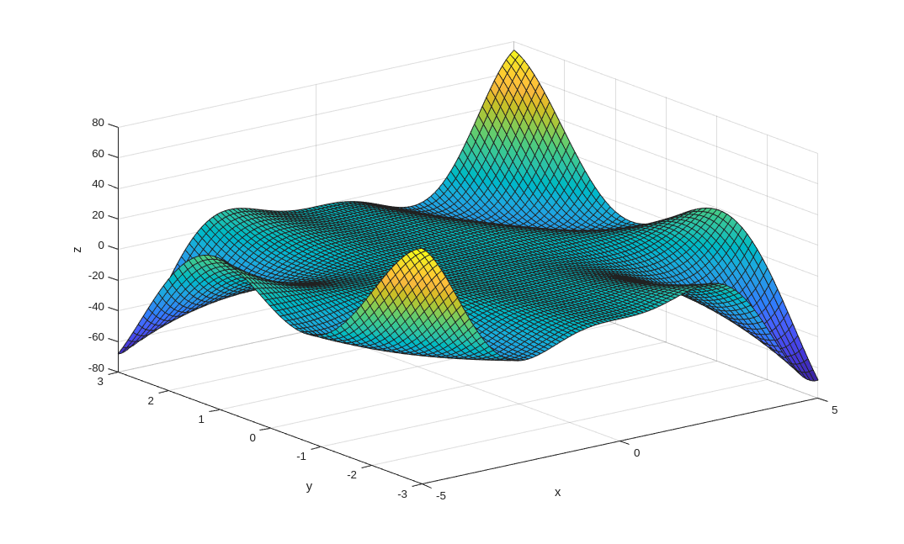
Il y a plusieurs options dans le menu au haut de la fenêtre qui affiche la figure. Ces options permettent d'ajouter et de modifier les étiquettes, la grille, la légende, la barre de couleurs, etc. Il y a aussi des options moins évidentes. Les options suivantes apparaissent lorsque la souris est au dessus de la figure.
Il suffit de déplacer la souris au dessus d'une icône pour obtenir une fenêtre contextuelle avec une brève description de l'option associée à l'icône. Il y a une icône pour sauvegarder l'image, un pour agrandir l'image, un pour réduire l'image, etc. Un des icônes est très utile pour visualiser un objet en trois dimensions. Après avoir cliqué sur le quatrième icône de la liste, celui avec une flèche courbée, nous pouvons alors utiliser le bouton gauche de la souris pour faire pivoter l'objet dans l'espace. Ceci est très utile quand nous devons changer notre point d'observation pour obtenir une meilleure vue de l'objet. Pour ceux qui utilise Octave, ils peuvent accéder à cette option en choisissant l'option Tools ⟹ GUI mode (on all axes) ⟹ Rotate on dans le menu au haut de la fenêtre qui affiche le figure.
Dessin d'une courbe
La procédure pour tracer une courbe dans \(\mathbb{R}^3\) est fondamentalement identique à la procédure pour tracer une courbe dans \(\mathbb{R}^2\). Supposons que nous voulons tracer la courbe donnée par la représentation paramétrique \( (x,y,z) = (f(t),g(t),h(t)) \) pour \( a \leq t \leq b \).
- La première étape est de créer une liste t de points qui forment un maillage de l'intervalle \([a,b]\).
- La deuxième étape est d'évaluer la représentation paramétrique à chacun des points du maillage. Comme d'habitude, nous assumons que les fonctions f, g et h qui forment les composantes de la représentation paramétrique sont array smart. Cette étape peut alors être complétée avec les commandes x = f(t), y = g(t) et z = h(t).
- Finalement, nous utilisons la commande plot3(x,y,z,options) pour dessiner la courbe.
Exemple: Supposons que nous voulons tracer la courbe donnée par la représentation paramétrique \( (x,y) = (\sin(t), t\cos(t), t^2) \) pour \(0 \leq t \leq 20 \).
Les commandes suivantes de Matlab tracent cette courbe.
>> t = 0:0.05:20; ...
x = sin(t); ...
y = t.*cos(t); ...
z = t.^2; ...
plot3(x,y,z,'b'); ...
xlabel('x'), ylabel('y'), zlabel('z'); ...
grid on
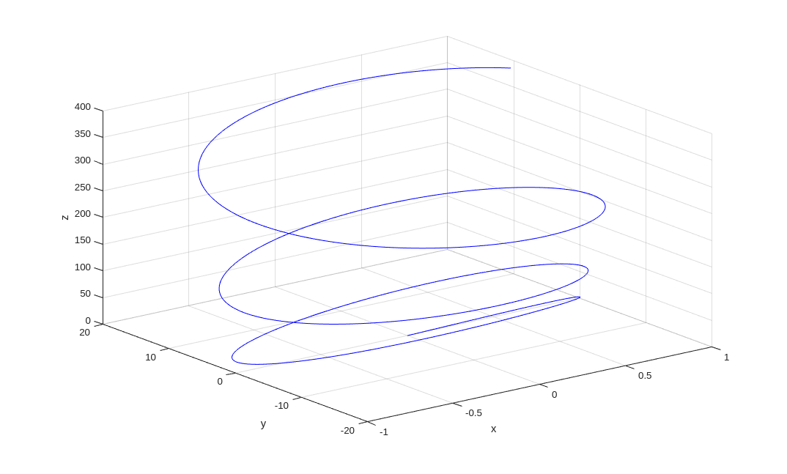
La fonction plot3 peut faire plus que tracer des courbes continues comme cela est illustré dans l'exemple suivant.
Exemple: Nous pouvons utiliser plot3 pour dessiner le cadre d'une boite avec tous ses bords de longueur 1 et centrée à l'origine.
>> close
>> x=[ 0 1 1 0 0 0 1 1 0 0 ]; ...
y=[ 0 0 1 1 0 0 0 1 1 0 ]; ...
z=[ 0 0 0 0 0 1 1 1 1 1 ]; ...
plot3(x-0.5,y-0.5,z-0.5,'b');
>> hold on, ....
x=[ 1 1 ]; ...
y=[ 0 0 ]; ...
z=[ 1 0 ]; ...
plot3(x-0.5,y-0.5,z-0.5,'b');
>> x=[ 1 1 ]; ...
y=[ 1 1 ]; ...
z=[ 0 1 ]; ...
plot3(x-0.5,y-0.5,z-0.5,'b');
>> x=[ 0 0 ]; ...
y=[ 1 1 ]; ...
z=[ 1 0 ]; ...
plot3(x-0.5,y-0.5,z-0.5,'b'); ...
axis('square'); ...
grid on
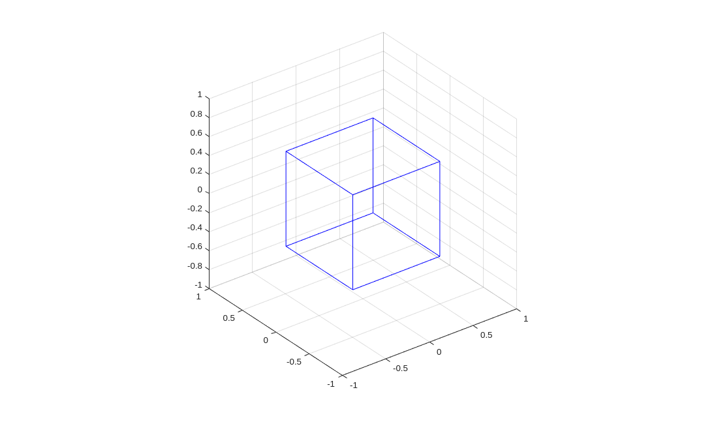
Le lecteur devrait faire une pause après chaque commande plot3 pour observer comment le cadre est dessiné. Par exemple, la première commande plot3 dessine successivement le segment de \( (0.0.0) \) à \( (1,0,0) \), le segment de \( (1,0,0) \) à \( (1,1,0) \), le segment de \( (1,1,0) \) à \( (0,1,0) \), le segment de \( (0,1,0) \) à \( (0,0,0) \), le segment de \( (0,0,0) \) à \( (0,0,1) \), et ainsi de suite. Les autres commandes plot3 dessinent les bords de la boite qui manquent. La commande axis('square') garantit que la même échelle est utilisée pour les trois axes. De cette façon, notre boite ressemble vraiment à une boite qui a des bords de même longueur.
Il y a une façon plus succincte de tracer le cadre de notre boite.
>> cla, ...
x=[ 0 1 1 0 0 0 1 1 0 0 NaN 1 1 NaN 1 1 NaN 0 0]; ...
y=[ 0 0 1 1 0 0 0 1 1 0 NaN 0 0 NaN 1 1 NaN 1 1]; ...
z=[ 0 0 0 0 0 1 1 1 1 1 NaN 1 0 NaN 0 1 NaN 1 0]; ...
cube = plot3(x-0.5,y-0.5,z-0.5,'b'); ...
axis('square'); ...
grid on
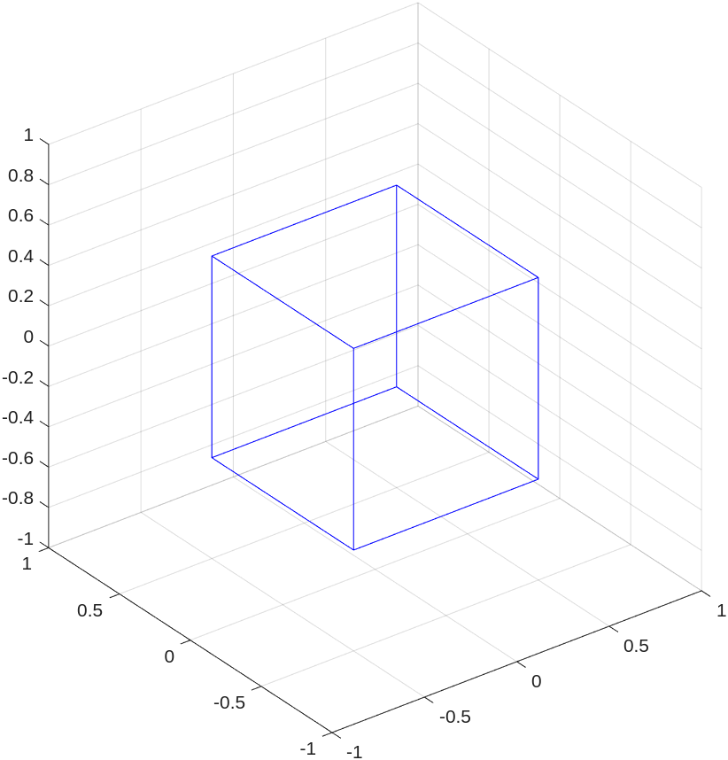
Les points avec les coordonnées [NaN NaN NaN] interrompent le dessin et insèrent un saut du point qui précède au point qui suit le point [NaN NaN NaN]. Par exemple, aucun segment n'est tracé entre [0 0 1] et [NaN NaN NaN].
Nous pouvons utiliser la commande suivante pour faire une rotation du cadre de notre boite de 45 degrés autour de l'axe qui contient le vecteur \( (1,1,1)\).
>> rotate(cube, [ 1 1 1 ], 45 );
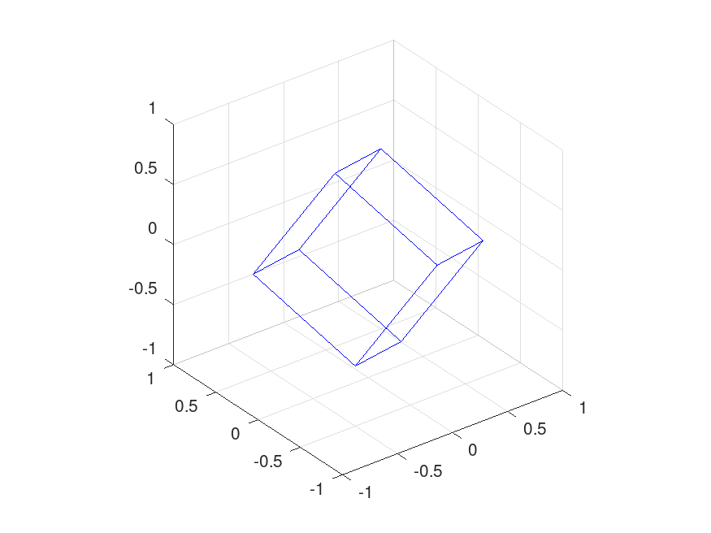
Il est possible d'effectuer des rotations plus générales dans \(\displaystyle \mathbb{R}^3\) en choisissant l'origine et la direction de l'axe de rotation.
Plus de dessins
Tous les genres de dessins qui peuvent être faits avec Matlab sont catalogués sur le site . Nous allons seulement fournir des exemples pour certains genres de dessins.
Exemple: Pour tracer 10 courbes de niveau de la fonction \(f\) définie par \(f(x,y) = \sin(x+y) x^2 y \) pour \(-5 \leq x \leq 5\) et \(-3 \leq y \leq 3\), nous utilisons les commandes suivantes.
>> close
>> [X,Y] = meshgrid(-5:0.1:5,-3:0.1:3); ...
Z = sin(X+Y).*X.^2.*Y; ...
contour(X,Y,Z,10,'ShowText','on'); ...
grid on , xlabel('x') , ylabel('y');
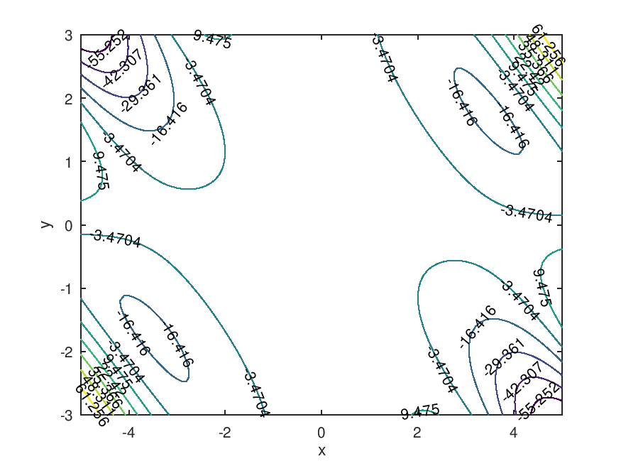
Nous pouvons choisir les courbes de niveaux que nous voulons tracer. Par exemple, supposons que nous voulons tracer les courbes de niveau données par \(f(x,y) = -2\) et \(f(x,y) = -6\). Nous pouvons tracer ces courbes de niveau avec la commande suivante.
>> close
>> contour(X,Y,Z,[-2,-6],'ShowText','on'); ...
grid on , xlabel('x') , ylabel('y');
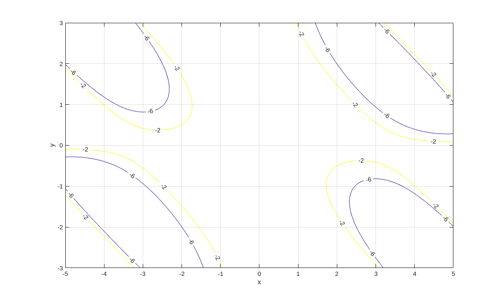
Exemple: Pour dessiner la courbe définie par l'équation \( r = 1 + \cos(\theta) \) en coordonnées polaires, nous utilisons les commandes suivantes .
>> close >> theta = 0:0.01:2*pi; ... r = 1 +cos(theta); ... polarplot(theta,r);
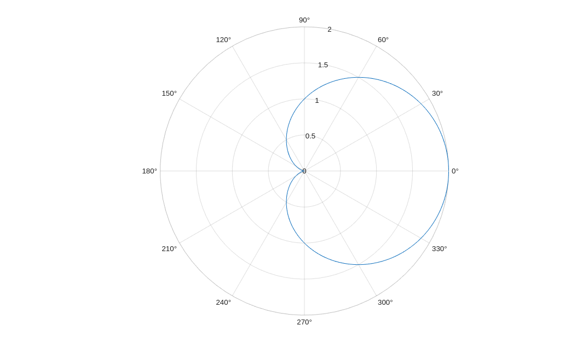
La fonction polarplot n'existe pas dans Octave. La fonction polar peut être utilisée en remplacement.
Exemple: Un sujet très populaire dans les cours de calcul différentiel et intégral est les surfaces de révolution. Par exemple, supposons que nous voulons dessiner la surface de révolution générée par la rotation de la courbe \( y = 2 + \cos(\pi x) \) pour \(0 \leq x \leq 4\) autour de l'axe des \(x\). Nous dessinons cette courbe en premier.
>> close
>> x = 0:0.02:4; ...
y = 2+cos(pi*x); ...
plot(x,y,'b'); ...
xlabel('x'), ylabel('y'); ...
grid on
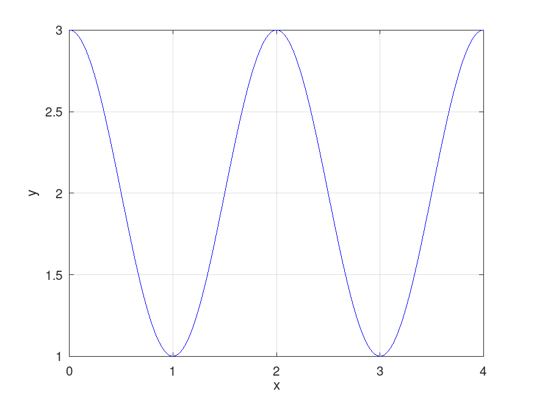
Nous utilisons Matlab pour dessiner la surface de révolution.
>> cla, ...
[X,Y,Z] = cylinder(y); ...
surf(4*Z,X,Y); ...
xlabel('x'), ylabel('y'), zlabel('z'); ...
grid on
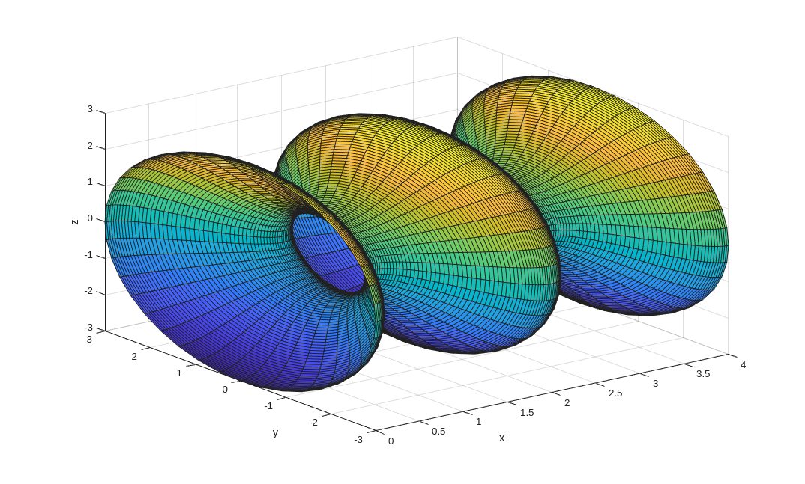
Le lecteur a probablement remarqué que nous avons utilisé la commande surf(4*Z,X,Y) plutôt que la commande surf(X,Y,Z) comme nous nous y serions attendu. Chaque colonne de Z énumère les composantes de z = linspace(0,1,length(x)). Pour i fixe, l'ensemble des points (X(i,j),Y(i,j)) pour tout j représente une coupe transversale de la surface de révolution (i.e. un cercle) avec \(x\) égale à x(i), et Z)i,j) = z(i) pour tout j. Si x = a:h:b, alors z(i) = (i-1)/(length(x)-1) et x(i) = a + (i-1)*h = a + z(i)*(b-a) pour 1 <= i <= length(x). Donc, nous devons changer l'ordre de X, Y et Z pour afficher la surface de révolution horizontalement au lieu de verticalement. Nous devons aussi transformer la valeur sur chaque rangé de Z en la valeur correspondante de x.
Suggestion: Utiliser un maillage x plus fin (avec plus de points) va produire une surface plus douce mais la figure qui en résulte pourrait ne pas afficher une image claire de la surface de révolution. Le lecteur devrait répéter cet exemple avec x = 0:0.01:4; pour comprendre pourquoi c'est le cas..
La fonction subplot
Il est possible de regrouper plusieurs dessins dans une même figure à l'aide de la fonction subplot de matlab. Le format primaire de cette fonction est subplot(n,m,k); où \(n\) est le nombre de rangées, \(m\) est le nombre de dessins par rangée, et \( k \) est le nombre associé au dessin sur la \(p^{e}\) rangée et \( r^{e} \) colonne tel que \( (k-1)/m = (p-1) m + (r-1)\) avec \(0 < r \leq m\) et \(0 < p \leq n\).
Exemple: Nous voulons dessiner les graphes de la fonction \(f_\mu\) définie par \(f_\mu(x,y) = (x\cos(\mu) - y\sin(\mu))(x\sin(\mu) + y \cos(\mu)) \) pour \( -2 \leq x,y \leq y\) et \( \mu = 0, \pi/4, \pi/2, 3\pi/4 \), et les afficher sur deux rangées dans une même figure.
>> close
>> [X,Y] = meshgrid(-2:0.05:2,-2:0.05:2);
>> for i = 1:4
mu = (i-1)*pi/4;
Z = (X.*cos(mu) - Y.*sin(mu)).*(X.*sin(mu) + Y.*cos(mu));
subplot(2,2,i);
surf(X,Y,Z);
xlabel('x'), ylabel('y'), zlabel('z'), grid on;
if ( i == 1 )
ttl = title('$\mu = 0$','interpreter','latex');
elseif ( i == 2 )
ttl = title('$\mu = \pi/4$','interpreter','latex');
elseif ( i == 3 )
ttl = title('$\mu = \pi/2$','interpreter','latex');
else
ttl = title(['$\mu = ',num2str(i-1),'\pi/4$'],'interpreter','latex');
end
end
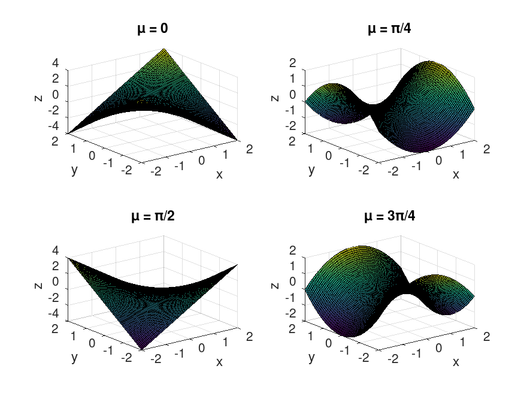
Le code précédent demande probablement quelques explications.
plutôt que de répéter quatre fois le groupe de commandes qui
commence avec subplot(2,2,i) pour
1 ≤ i ≤ 4, nous avons créé une boucle. Pour obtenir un joli
titre pour chaque dessin, nous avons demandé que
LaTeX soit utilisé pour interpréter le titre. Ainsi
\mu
et \pi
sont affichés μ et π
respectivement. Le lecteur ne doit pas espérer une version
complète de LaTeX mais une version qui est suffisante pour
afficher la plus part des formules mathématiques.
Objets graphiques
Nous terminons ce document avec une brève présentation simplifiée de la hiérarchie des objets graphiques. Une connaissance des objets qui composent une figure et être capable de modifier certaines de leurs propriétés sont de temps à autre utiles pour produire une belle figure qui est aussi précise. Le diagramme suivant est une version simplifiée de la structure d'une figure.
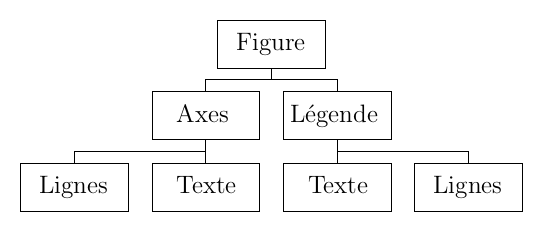
Quand les fonctions plot, surf, ... sont utilisées, les objets suivants sont créés.
- Un objet Figure.
- Un objet Axes qui est un enfant de l'objet Figure.
- Quelques objets Lignes (un graphe, une surface, ...) et quelques objets Texte (le texte ajouté à un dessin) qui sont des enfants de l'objet Axes.
- Un objet Légende, si une légende est requise, qui est un enfant de l'objet Figure.
Supposons que nous exécutons les commandes suivantes.
>> close
>> x = 0:0.02:4; ...
y = x.^2.*exp(-x); ...
p1 = plot(x,y,'b'); ...
hold on; ...
y = x.^2.*exp(-2*x); ...
p2 = plot(x,y,'r'); ...
xl = xlabel('x'); ...
yl = ylabel('y'); ...
l1 = legend('x^2 exp(-x)','x^2 exp(-2x)');
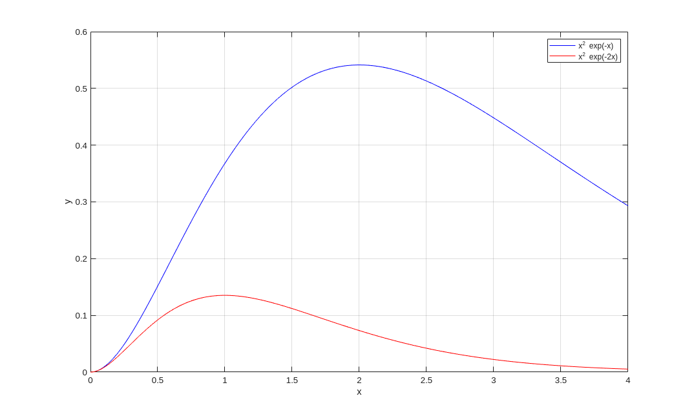
La commande suivante donne l'anse de l'objet Figure couramment actif qui a été créé par le premier appel à la fonction plot.
>> h1 = gcf;
Nous pouvons alors utiliser cette anse pour modifier l'objet Figure. Par exemple, nous pouvons changer la couleur de fond avec la commande suivante.
>> h1.Color = [ 0.5 0.5 0.5];
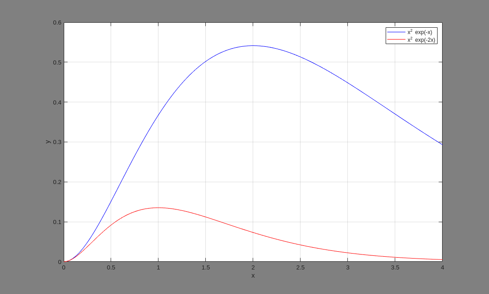
La commande précédente ne fonctionne pas avec les anciennes versions de Matlab. À sa place, la commande set(h1,'Color', [ 0.5 0.5 0.5]) doit être utilisée. La commande get(h1) énumère toutes les propriétés possibles de l'objet Figure avec leurs valeurs.
La commande suivante donne l'anse de l'objet Axes qui est un enfant de l'objet Figure couramment actif qui a été créé par la fonction plot.
>> h2 = gca;
Nous pouvons utiliser cette anse pour modifier l'objet Axes. Par exemple, nous pouvons changer la couleur de fond et les couleurs des axes avec les commandes suivantes.
>> h2.Color = [ 0.7 0.8 0.9]; ... h2.XColor = [ 1 0 0]; ... h2.YColor = [ 1 0 0];
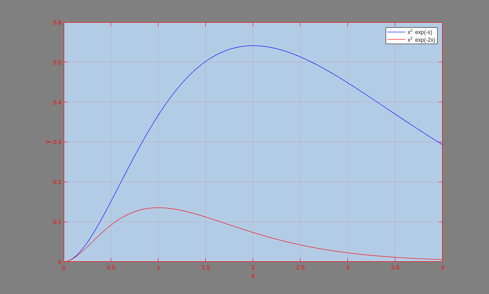
Comme précédemment, les commandes précédentes ne fonctionnent pas avec les ansiennes versions de Matlab. À leurs places, Les commandes set(h2,'Color',[ 0.7 0.8 0.9]), set(h2,'XColor',[ 1 0 0]) et set(h2,'YColor',[ 1 0 0]) doivent être utilisées. La commande get(h2) énumère toutes les propriétés possibles de l'objet Axes avec leurs valeurs.
La commande suivante énumère les anses des enfants de l'objet Figure,
>> h1c = h1.Children
h1c = 2×1 graphics array: Legend (x^2 exp(-x), x^2 exp(-2x)) Axes
Pour les anciennes versions de Matlab, nous devons utiliser la commande h1c = get(h1,'Children'). Comme nous nous y attendions, il y a deux enfants. Une des deux anses est l'anse associée à l'objet Axes et l'autre est l'anse associée à l'objet Légende.
>> h1c(1).Children, l1.Children, h1c(2).Children, h2.Children
ans = 0×0 empty GraphicsPlaceholder array. ans = 0×0 empty GraphicsPlaceholder array. ans = 2×1 Line array: Line (x^2 exp(-2x)) Line (x^2 exp(-x)) ans = 2×1 Line array: Line (x^2 exp(-2x)) Line (x^2 exp(-x))
Pour les anciennes versions de Matlab, nous devons utiliser les commandes get(h1c(1),'Children'), get(h1c(2),'Children'), get(h2,'Children') et get(l1,'Children'). L'objet Axes a deux enfants: un objet Lignes pour chacune des deux courbes produites par la fonction plot. L'objet Légende n'a pas d'enfants.
La commandes suivante énumère les anses des enfants de l'objet Axe, les anses des objets Lignes associés aux deux courbes produites par la fonction plot, et les descriptions de ces objets Lignes.
>> h2c = h2.Children, p1, p1.DisplayName, p1.Type, ... p2, p2.DisplayName, p2.Type
h2c = 2×1 Line array: Line (x^2 exp(-2x)) Line (x^2 exp(-x)) p1 = Line (x^2 exp(-x)) with properties: Color: [0 0 1] LineStyle: '-' LineWidth: 0.5000 Marker: 'none' MarkerSize: 6 MarkerFaceColor: 'none' XData: [0 0.0200 0.0400 0.0600 0.0800 0.1000 0.1200 0.1400 0.1600 0.1800 0.2000 … ] (1×201 double) YData: [0 3.9208e-04 0.0015 0.0034 0.0059 0.0090 0.0128 0.0170 0.0218 0.0271 … ] (1×201 double) Show all properties ans = 'x^2 exp(-x)' ans = 'line' p2 = Line (x^2 exp(-2x)) with properties: Color: [1 0 0] LineStyle: '-' LineWidth: 0.5000 Marker: 'none' MarkerSize: 6 MarkerFaceColor: 'none' XData: [0 0.0200 0.0400 0.0600 0.0800 0.1000 0.1200 0.1400 0.1600 0.1800 0.2000 … ] (1×201 double) YData: [0 3.8432e-04 0.0015 0.0032 0.0055 0.0082 0.0113 0.0148 0.0186 0.0226 … ] (1×201 double) Show all properties ans = 'x^2 exp(-2x)' ans = 'line'
Pour les anciennes versions de Matlab, nous devons utiliser les commandes h2c = get(h2,'Children'), get(p1,'DisplayName'), get(p1,'Type'), get(p2,'DisplayName') et get(p2,'Type'). Nous pouvons changer le style et la couleur de la première courbe avec les commandes suivantes.
>> p1.LineStyle = '-.'; p1.Color = 'g';
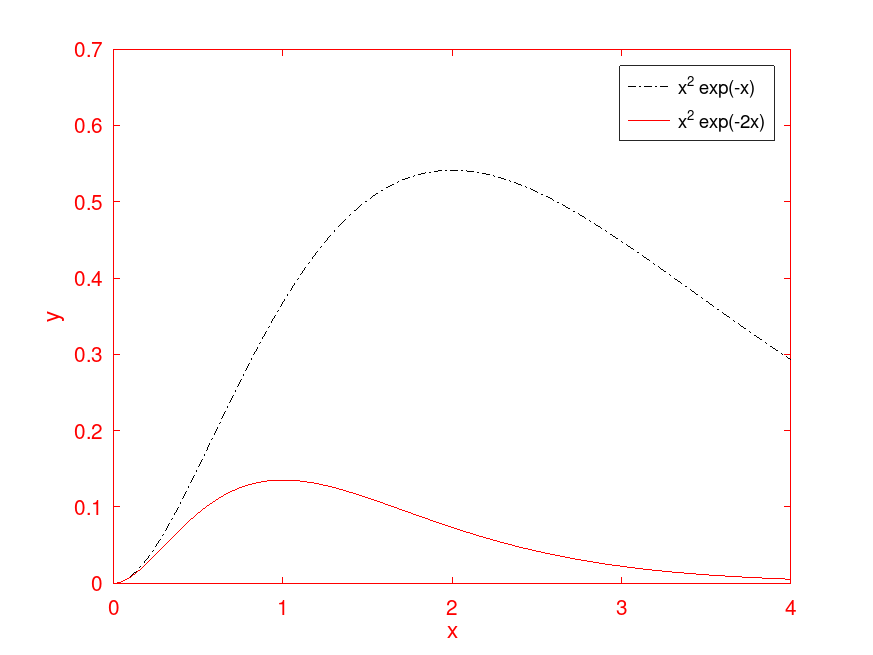
Pour les anciennes versions de Matlab, nous devons utiliser les commandes set(p1,'LineStyle','-.') et set(p1,'Color','g').
Conseil: L'utilisation de la propriété Children pour récupérer les anses des enfants des objets Figure et Axes est fortement déconseillée. L'ordre dans laquelle les anses sont énumérées est arbitraire. Il est alors difficile de localiser l'anse qui est associée à l'objet que l'on veut modifier. Il est préférable d'obtenir l'anse d'un objet quand celui-ci est créé comme nous avons fait avec les commandes p1 = plot(x,y,'b'), p2 = plot(x,y,'r'), xl = xlabel('x'), yl = ylabel('y') et l1 = legend('x^2 exp(-x)','x^2 exp(-2x)') ci-dessus.
Au temps que possible, il est aussi préférable d'éviter de modifier un objet à l'aide de son anse. Il est préférable de définir les propriétés quand un objet est créé comme nous avons fait avec les commandes p1 = plot(x,y,'b') et p2 = plot(x,y,'r'). Le format générale pour définir les propriétés d'un objet lors de sa création est
Exemple: Nous pouvons avoir plus d'une figure présentent en même temps Les commandes suivantes démontrent comment cela peut être fait.
>> close
>> x = 0:0.02:2; y = x.^2; z = sqrt(x); w = x.^(3/2); ...
f1 = figure; plot(x,y); title('y = x^2 and y = x^{3/2}'); ...
f2 = figure; plot(x,z); title('$y = \sqrt{x}$','Interpreter','latex'); ...
figure(f1); hold on; plot(x,w,'r'); text(1,0.9,'(1,1)');
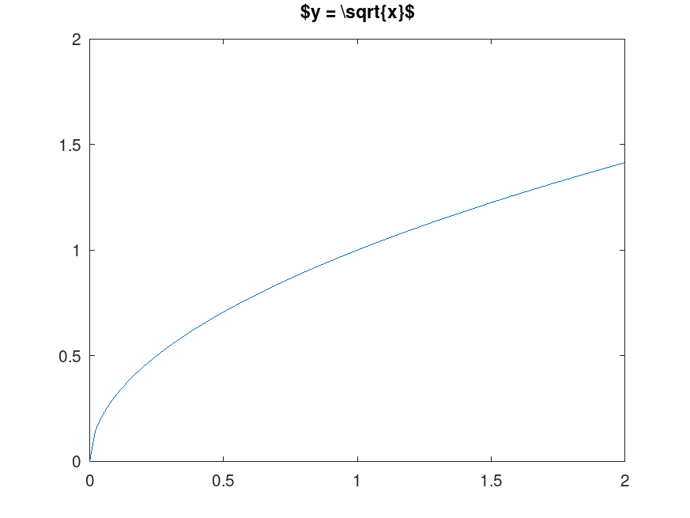
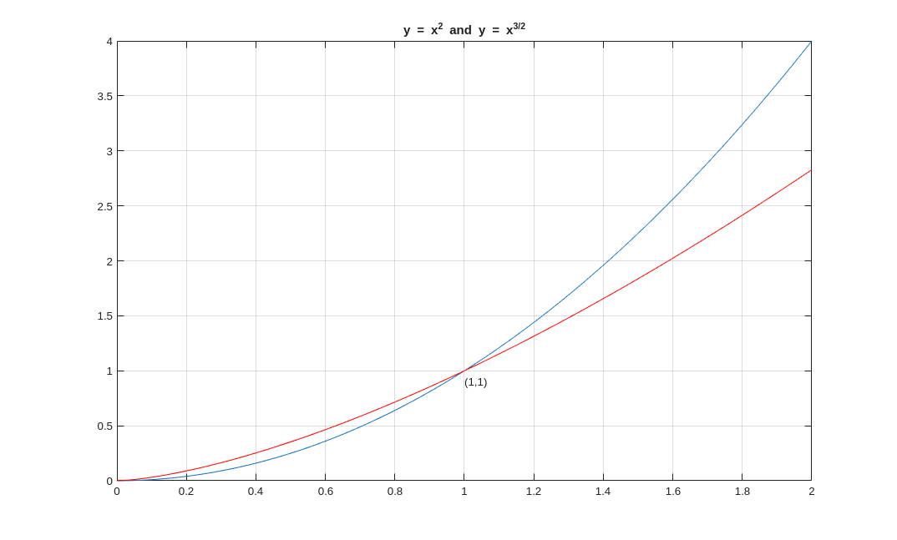
La commande f1 = figure génère un objet Figure qui devient la figure couramment active. Les deux commandes graphiques qui suivent utilisent cet objet Figure. La commande f2 = figure génère un nouvel objet Figure qui devient la figure couramment active. Les deux commandes graphiques qui suivent utilisent ce nouvel objet Figure. Finalement, la commande figure(f1) désigne l'objet Figure avec l'anse f1 comme étant la figure couramment active pour les futures commandes graphiques.
Exemple: Un objet Figure peut avoir plus d'un objet Axes comme enfants. l'exemple suivant provenant du site Internet de Matlab démontre comment cela peut être fait. La fonction peaks de Matlab est une fonction de deux variables à valeurs réelles qui est prédéfinie.
>> close all
>> x = -2.5:0.02:2.5; ...
y = -4:0.02:4; ...
[X,Y] = meshgrid(x,y); ...
Z = peaks(X,Y); ...
figure; ...
ax1 = axes('Position',[0.1 0.1 0.7 0.7]); ...
ax2 = axes('Position',[0.65 0.65 0.28 0.28]); ...
contour(ax1,X,Y,Z); ...
grid(ax1,'on'), ...
surf(ax2,X,Y,Z); ...
colormap(ax2,summer);
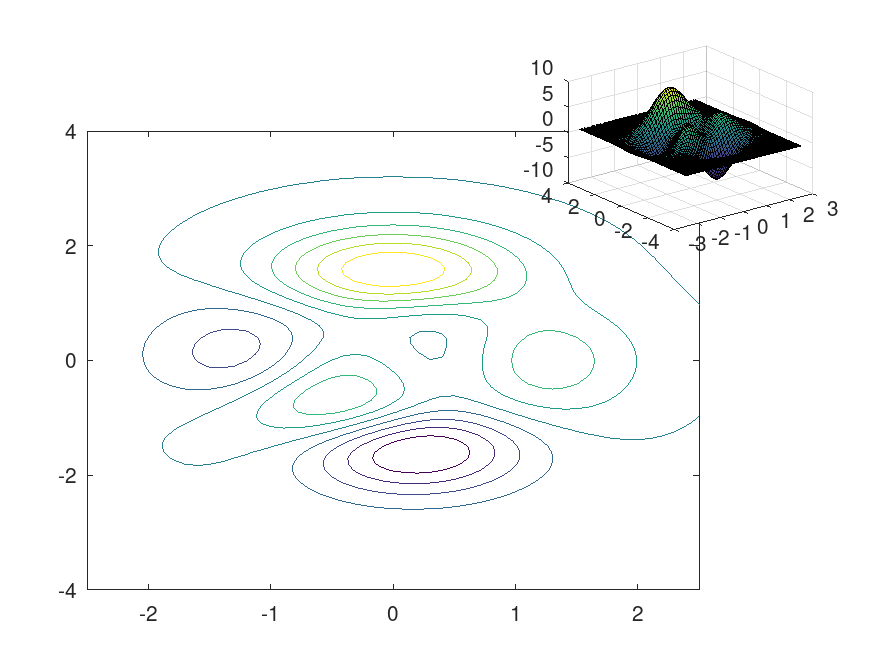